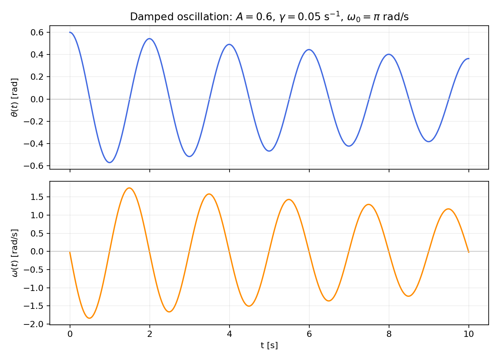

Learning objectives. By completing this project, the student will:
Abstract. Because computers have finite memory, numerical errors must always be taken into account when doing calculations, especially when working with floating-point numbers [1]. In the first parts of this project we investigate round-off errors and truncation errors using the Python programming language, and we discuss how different implementation strategies affect code efficiency and code clarity. You will use object-oriented programming to encapsulate data and operations, with automatic differentiation as a compact, specialized example [2]. Automatic differentiation is a cornerstone in training neural networks and in many commercial simulation codes.
At the end you will use the free smartphone app phyphox [3], or a bundled example recording, and apply the very same numerical-differentiation tools you built earlier in the project to real sensor data. Remember to take a look in the Appendix for some tips, and read the guidelines for project submission at the end!
Part 1.
Run the following code snippet:
import sys
sys.float_info
max, min, and epsilon, and explain why they have these values.Hint: Read the lecture material on the IEEE Standard for floating-point arithmetic.
Part 2.
In Python, typing 0.1+0.2 does not (typically) produce the same output as 0.3.
But, 0.125+0.25 is always equal to 0.375
Part 3.
==-operator to test whether two floating-point numbers are equal?The purpose of this exercise is to learn a little bit about
NumPy, which is an incredibly useful Python library.
A major reason for its popularity is efficiency: doing computations with NumPy
arrays (objects of the type ndarray) instead of using native Python lists (vanilla Python) can,
by itself, speed up a program by several orders of magnitude!
The mechanism for speed-up is vectorized computation.
Using NumPy arrays allows you to create vectorized functions; functions that operate on a whole array at once, rather than looping over the elements one-by-one inside a custom written loop.
The way vectorization works behind the scenes is still via loops (optimized, pre-compiled C code), but as Python programmer you do not need to worry about the details.
Part 1.
The following code block gives an example of a vectorized function:
x = np.linspace(0, 1, 10)
np.exp(x) # Apply f(t)=exp(t) to each element in the array x.
np.exp(-x) # Apply the function f(t)=exp(-t) to each element of x.
Notice the usage of np.exp instead of using the exponential function provided
in the built-in math
library; this is an example of a
universal function.
x and holding the same values, e.g. with x_list = list(x). Runnp.exp(x_list)
np.exp(-x_list)
Part 2.
As already hinted at, the NumPy library comes with a plethora of useful features and functions. The code snippets below show some examples:
np.zeros(20)
np.ones(20)
np.linspace(0, 10, 11)
np.linspace(0, 10, 11, endpoint=False)
vector = np.arange(5) + 1
2*vector
Part 3.
Frequently you will want to extract a subset of values from an array based on some kind of criterion. For example, you might want to count the number of non-zero numbers, or identify all values exceeding a certain threshold. With NumPy, such tasks are easily achieved using boolean masking, e.g.:
array_of_numbers = np.array([4, 8, 15, 16, 23, 42,0,5])
nnz = np.count_nonzero(array_of_numbers)
print(f'There are {nnz} non-zero numbers in the array.')
is_even = (array_of_numbers % 2 == 0)
is_greater_than_17 = (array_of_numbers > 17)
is_even_and_greater_than_17 = is_even & is_greater_than_17
However, neither of the following code lines will execute:
is_even_and_greater_than_17 = is_even and is_greater_than_17
print(array_of_numbers % 2 == 0 & array_of_numbers > 17)
Part 4.
The function np.where can also be used to select elements from an array.
np.where(array_of_numbers > 17)[0]
np.where(array_of_numbers > 17, 1, 0)
In scientific computing we often need the derivative of either a mathematical function or a sequence of measured values. In this exercise you will build finite-difference functions that handle an array of values. You will first test them on a function with a known derivative and later reuse the same code on your own phone data.
We use a damped oscillation as our test case:
$$ \begin{equation} \theta(t)=A e^{-\gamma t}\cos(\omega_0t), \qquad A=0.6,\quad \gamma=0.05,\quad \omega_0=\pi . \tag{1} \end{equation} $$Here \( \theta \) may be interpreted as an angle in radians and \( t \) as time in seconds. A vectorized Python implementation is
def damped_angle(t, A=0.6, gamma=0.05, omega0=np.pi):
return A*np.exp(-gamma*t)*np.cos(omega0*t)
It works for both a single number and a NumPy array.
The two finite-difference functions you write below operate only on sampled values and a spacing. A separate wrapper will adapt them to arbitrary Python functions. Keeping these jobs separate makes the code easier to test and is what allows you to reuse the numerical core in Exercise 5.
Part 1.
The analytical angular velocity is
$$ \begin{equation} \omega(t)=\theta^\prime(t) =-A e^{-\gamma t} \left[\gamma\cos(\omega_0t)+\omega_0\sin(\omega_0t)\right]. \tag{2} \end{equation} $$damped_velocity.Figure 1: The damped angle and its analytical angular velocity for the default parameters.

Part 2.
Suppose y contains uniformly spaced samples with spacing \( h \). The forward
and central differences are
def forward_diff(y, h):
# your code
def central_diff(y, h):
# your code
Do not use a Python loop. forward_diff(y, h) must return an array of length
len(y)-1 and central_diff(y, h) an array of length len(y)-2. Test both
functions on a linear function, whose derivative is constant, and a quadratic
function, whose derivative is known.
Part 3.
Python functions are first-class objects: they can be passed as arguments to other functions. Build a wrapper with the following interface:
def derivative_at(f, x, h, method, *args, **kwargs):
# evaluate f at the two or three points needed by method,
# then call forward_diff or central_diff
The argument method must be either your forward_diff or central_diff
function. Extra positional and keyword arguments must be passed on to f.
Appendix A contains a short explanation of *args and **kwargs.
derivative_at to estimate \( \omega(0.8) \) with both methods and \( h=10^{-2} \).damped_velocity(0.8).Part 4.
Quantify the numerical error at \( t=0.8 \):
Keep forward_diff and central_diff unchanged after this point: they are
part of the code you will reuse in Exercise 5.
The main purpose of this exercise is to practise writing and using Python classes. A class bundles related data and the methods that operate on those data. For example, every Python string is an object with useful methods:
x = 'This is a string'
x.upper()
The call x.upper() returns 'THIS IS A STRING'. Classes are used throughout
engineering software to represent objects such as sensors, materials,
geometries, and numerical models. The implementation is written once and can
then be reused for many objects.
Here is a class that stores the coordinates of a point together with an operation that belongs naturally to a point:
import numpy as np
class Point:
def __init__(self, x, y):
self.x = x
self.y = y
def distance_from_origin(self):
return np.sqrt(self.x**2 + self.y**2)
Part 1.
Point objects and call distance_from_origin() for both.move(self, dx, dy) that changes the coordinates by dx and dy. Test it on one of your points.Automatic differentiation is a specialized application of classes. We use it
here because it gives a compact example of encapsulation: a function value and
its derivative are stored together, while the rules of differentiation are
implemented once and reused in many calculations. Redefining operators such
as + and * is not necessary for most Python classes, but it is particularly
convenient in this example.
Numerical differentiation approximates a derivative by subtracting nearby values. Automatic differentiation instead carries the value and derivative through every elementary operation by applying the usual calculus rules [2].
For every intermediate quantity we store
$$ \begin{equation} \begin{pmatrix} f(x) \\ f^\prime(x) \end{pmatrix}. \tag{5} \end{equation} $$We call this pair a dual number. Begin with the following class:
class Dual:
"""Store a function value and its derivative."""
def __init__(self, value, derivative=0.0):
self.value = value
self.derivative = derivative
def __repr__(self):
return f"Dual(value={self.value}, derivative={self.derivative})"
Part 2.
x = Dual(3, 1) and c = Dual(3). Print both objects and explain why their derivatives differ.Dual object?If \( u \) and \( v \) depend on \( x \), then
$$ (u+v)' = u' + v', \qquad (u-v)' = u' - v'. $$Create two objects and try to add them:
u = Dual(1, 2)
v = Dual(3, 4)
print(u + v)
Python initially reports an error because it does not yet know what + means
for our class. We define the operation once by adding this method inside
Dual:
def __add__(self, other):
return Dual(self.value + other.value,
self.derivative + other.derivative)
In this exercise, arithmetic operations combine two Dual objects. Represent
an ordinary constant \( c \) by Dual(c), because its derivative is zero. Keeping
this convention lets us concentrate on the rules of differentiation.
Part 3.
Add the worked __add__ method to your class and check that u + v now gives
value 4 and derivative 6. Then implement __sub__ and __neg__.
Test your implementation with
print(u + v) # value 4, derivative 6
print(u - v) # value -2, derivative -2
print(-u)
Multiplication and division use the product and quotient rules:
$$ \begin{align} (f(x)\cdot g(x))^\prime &=f^\prime(x)\cdot g(x)+f(x)\cdot g^\prime(x), \tag{6} \\ \left(\frac{f(x)}{g(x)}\right)^\prime &=\frac{f^\prime(x)\cdot g(x)-f(x)\cdot g^\prime(x)}{g(x)^2}. \tag{7} \end{align} $$Part 4.
Implement __mul__ and __truediv__ using the rules above.
Test the class on expressions whose analytical derivatives you know:
x = 1.2
One = Dual(1.0) # a constant has derivative 0
X = Dual(x, 1) # x has derivative 1 with respect to itself
print(X*X*X) # compare with x**3 and 3*x**2
print(One/(One+X)) # compare with 1/(1+x) and -1/(1+x)**2
Arithmetic is not enough for our damped oscillation: we also need the chain rule
$$ \begin{equation} f(g(x))^\prime=f^\prime(g(x))\cdot g^\prime (x). \tag{8} \end{equation} $$Part 5.
The exponential function provides a pattern:
def dual_exp(d):
value = np.exp(d.value)
return Dual(value, value*d.derivative)
Write dual_cos(d) in the same way. It should take a Dual and return a new
Dual containing the cosine and its derivative from the chain rule. Test both
functions using Dual(0.4, 1).
Part 6.
Use your class to evaluate the damped oscillation from Exercise 3:
t = 0.8
T = Dual(t, 1)
A = Dual(0.6)
Gamma = Dual(0.05)
Omega0 = Dual(np.pi)
theta_dual = A*dual_exp(-Gamma*T)*dual_cos(Omega0*T)
print(theta_dual)
print(theta_dual.value, damped_angle(t))
print(theta_dual.derivative, damped_velocity(t))
Part 7.
In three to five sentences, explain what Point and Dual encapsulate and
where code is reused. Also explain why a class is broadly useful even though
automatic differentiation and operator overloading are specialized examples.
Make a motion, record it, and run the code you built on your own data. The goal is not a precise physical experiment. We want to see that integrating an angular velocity produces an angle and that differentiating that angle approximately recovers the signal we started with:
$$ \omega(t)\ \xrightarrow{\text{integrate}}\ \theta(t)\ \xrightarrow{\text{differentiate}}\ \widehat{\omega}(t)\approx\omega(t). $$phyphox (PHYsical PHone eXperiments) is a free app that logs a phone's sensors and exports the data as CSV [3]. Open Sensor \( \to \) Gyroscope. Record 10–20 seconds while you safely rock or rotate the phone by hand. You may make a regular oscillation, draw a pattern through the air, or invent another motion.
Use the bundled data/gyroscope_example.csv and do exactly the same analysis.
Using the example data does not reduce the assessment. The interesting part
here is the code that you write.
Part 1.
Export the recording as CSV and load it with pandas. (NB: The exact column names can vary slightly between app versions.)
omega.Absolute channel: it has no sign, so clockwise and counter-clockwise rotations cannot cancel during integration.Part 2.
The gyroscope measures angular velocity \( \omega(t) \) directly, not the angle
\( \theta(t) \). Extract the timestamp as t and use the following implementation
of the composite trapezoidal rule:
def cumulative_trapezoid(y, t, initial=0.0):
"""Return the cumulative integral of y with the same length as y."""
areas = 0.5*(y[1:] + y[:-1])*np.diff(t)
return initial + np.concatenate(([0.0], np.cumsum(areas)))
theta = cumulative_trapezoid(omega, t)
Plot the resulting angle \( \theta(t) \). You do not need to know its starting
value: choosing initial=0.0 only shifts the entire angle curve vertically.
Part 3.
Apply your unmodified forward_diff and central_diff functions from
Exercise 3 to theta.
signals. Zoom in if that makes the comparison clearer.
recognize something you did with the phone in the plot?
The required project ends with your creative phone analysis above. This extension is available if you want to apply the same code to a very different real dataset.
In a deliberately simplified one-box model, atmospheric methane (CH$_4$) is removed with a fixed lifetime:
$$ \begin{equation} \frac{d(\Delta M)}{dt} = \frac{E_{\mathrm{CH_4}}(t)}{2.75} - \frac{\Delta M}{\tau}, \qquad \tau=9.1\text{ years}, \tag{9} \end{equation} $$Here \( \Delta M \) [ppb] is the methane concentration anomaly above the
pre-industrial value \( M_0=700 \) ppb, \( E_{\mathrm{CH_4}}(t) \) [Tg/yr] is an
effective emission rate under this model, and
\( 1\text{ ppb CH}_4=2.75\text{ Tg CH}_4 \). Bundled with this project is
data/ch4_annual.dat: NOAA's global annual
mean atmospheric CH$_4$ record, 1984–2025 [4].
central_diff function and \( h=1 \) year.The wrapper in Exercise 3 must work with functions that have different
parameters. Python's *args collects extra positional arguments and
**kwargs collects extra keyword arguments. Both can be forwarded without
the wrapper knowing their names:
def call_function(f, x, *args, **kwargs):
return f(x, *args, **kwargs)
# Positional parameters: A, gamma, omega0
call_function(damped_angle, 0.8, 0.6, 0.05, np.pi)
# The same parameters passed by name
call_function(
damped_angle,
0.8,
A=0.6,
gamma=0.05,
omega0=np.pi,
)
Your derivative_at function uses exactly the same forwarding pattern when it
evaluates f at the points required by the chosen finite-difference method:
derivative_at(
damped_angle,
0.8,
1e-3,
central_diff,
A=0.6,
gamma=0.05,
omega0=np.pi,
)
phyphox is free and available from the app store on your phone:
No account or sign-up is required. Once installed, browse to Sensor \( \to \) Gyroscope (the experiment used in Exercise 5), press record, and use the export button (usually a share/export icon) to save your recording as a CSV file.
Unlike previous years, this project does not need any exotic packages –
a standard scientific-Python environment with numpy, scipy, matplotlib,
and pandas is all you need. If you do not already have such an environment,
you can create one with conda:
conda create -n project1 python=3.11 numpy scipy matplotlib pandas jupyter -c conda-forge
conda activate project1
Remember to select this environment (or its Jupyter kernel) in whichever tool you use to write your notebook (VS Code, Jupyter, Colab, ...).
You should bear the following points in mind when working on the project: